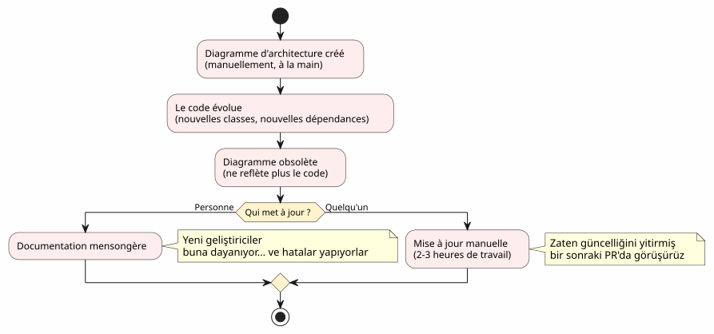
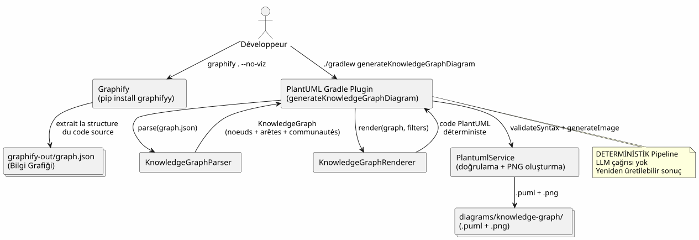
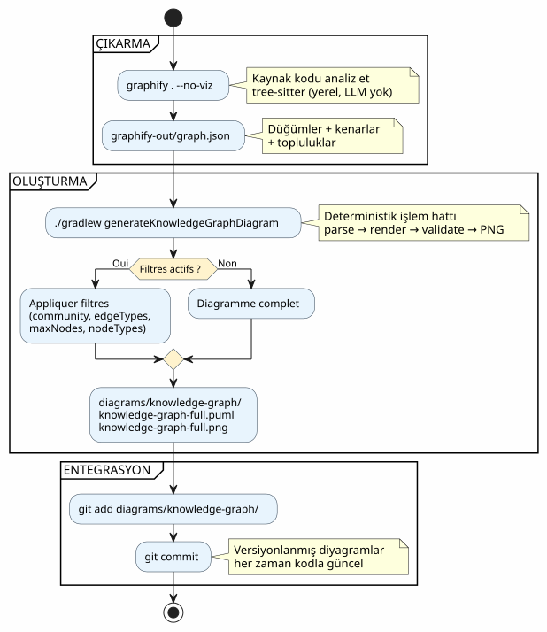
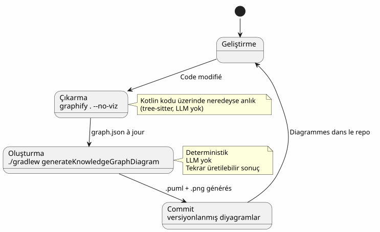
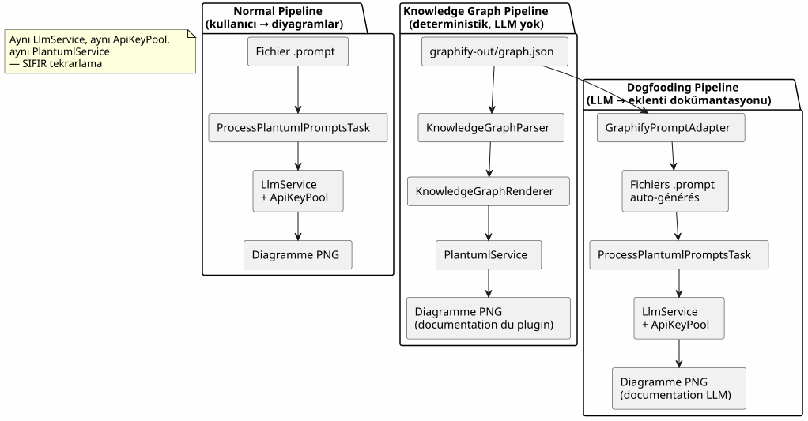
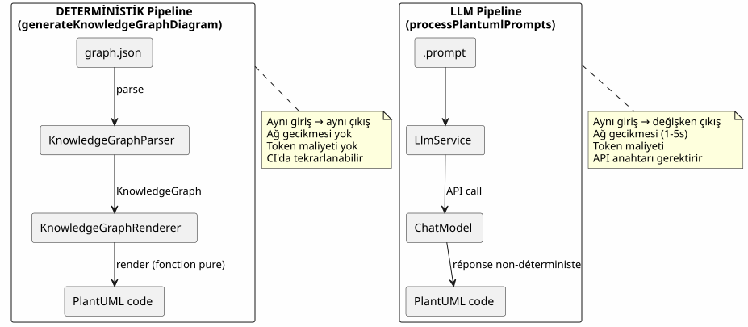
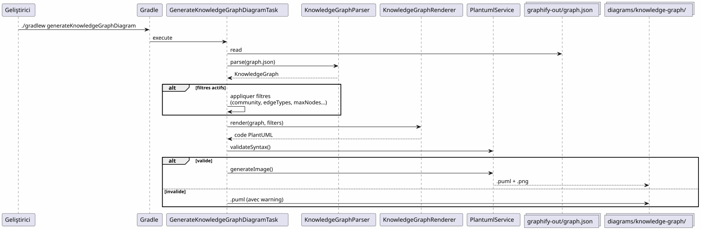
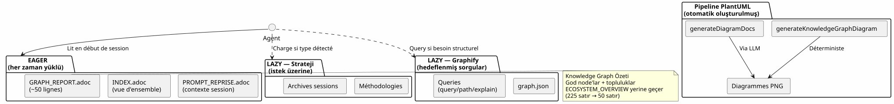
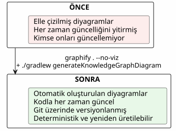

Graphify'ı bir Gradle iş akışına entegre etmek: tek bir komutla Knowledge Graph'tan PlantUML diyagramına
Yayınlandı: 19 April 2026
- Sorun: kodun her zaman gerisinde kalan diyagramlar
- Çözüm: deterministik bir Knowledge Graph → PlantUML hattı
- Adım 1: Graphify’ı yükleyin ve Knowledge Graph’ı dışa aktarın
- Adım 2: Gradle eklentisi Bilgi Grafiğini (Knowledge Graph) PlantUML’e dönüştürür
- Adım 3: Günlük Kullanım
- Bir Gradle iş akışındaki eksiksiz pipeline
- Dogfooding: eklenti kendi kendini belgelendiriyor
- Neden deterministiktir (ve neden önemlidir)
- Pipeline’ın kendi diyagramları
- Proje yönetişimine entegrasyon
- Hazırlık: 5 dakikalık kontrol listesi
- Tuzaklar ve hafifletmeler
- Sonuçta elde ettiğimiz şey
- Bağlantılar
Kod tabanınız büyüyor. Modüller arasındaki bağımlılıklar artıyor. Mimari dokümantasyon, daha yazılmadan güncelliğini yitiriyor. Ya Gradle build işleminiz, kodun gerçek yapısından yola çıkarak otomatik olarak güncel diyagramlar oluşturabilseydi? Graphify + PlantUML Gradle Plugin hattının yaptığı tam olarak budur:`graphify . --no-viz`Knowledge Graph’ı çıkarır,`./gradlew generateKnowledgeGraphDiagram`onu PlantUML diyagramlarına dönüştürür. Sıfır LLM, sıfır manuel, %100 deterministik.
- içindekiler
-
[]
Sorun: kodun her zaman gerisinde kalan diyagramlar
Birkaç bin satırı aşan her proje bu sendromu yaşar:
-
Projenin başında bir mimari diyagram çizilir
-
Kod gelişir, bağımlılıklar değişir
-
Diyagram dekoratif bir yalana dönüşüyor
-
Kimse güncellemiyor çünkü çok zahmetli
-
Yeni gelenler buna dayanıyor ve hatalar yapıyorlar

Soru diyagramlara gerek var mı? değil — herkes bunun cevabının evet olduğunu biliyor. Soru şu:onları güncel tutan kim?
Cevap: hiç kimse. Otomatik değilse.
Çözüm: deterministik bir Knowledge Graph → PlantUML hattı
Prensip basit: diyagramları elle çizmek yerine, onlarıkodun gerçek yapısından oluşturulurLütfen çevrilecek metni sağlayın.

İki komut. Hepsi bu.
# Étape 1 : extraire le Knowledge Graph
graphify . --no-viz
# Étape 2 : générer les diagrammes PlantUML
./gradlew generateKnowledgeGraphDiagramSonuç mu? Dosyalar`.puml` et .png`içinde`diagrams/knowledge-graph/, Git’de versiyonlanmış ve her zaman kodla güncel.
Adım 1: Graphify’ı yükleyin ve Knowledge Graph’ı dışa aktarın
Kurulum
Graphify, kod tabanınızı analiz eden ve yapılandırılmış bir bilgi grafiği oluşturan bir Python aracıdır:
# Méthode recommandée
uv tool install graphifyy && graphify install --platform opencode
# Alternative avec pip
pip install graphifyy && graphify install --platform opencodeHariç tutmaları yapılandır
Bir dosya oluşturun`.graphifyignore`iş mantığının bir parçası olmayan dosyaları hariç tutmak için proje kökünde:
# Secrets — JAMAIS dans le graphe
*-context.yml
*.env
# Fichiers générés
build/
.gradle/
# Tests fonctionnels
src/functionalTest/Knowledge Graph’u Çıkart
graphify . --no-vizBayrak`--no-viz`HTML oluşturma adımını atlar (Gradle hattında gereksizdir). Sonuç bir dosyadır`graphify-out/graph.json`içeren:
-
Düğümler: sınıflar, fonksiyonlar, dosyalar — türleri ve topluluklarıyla birlikte
-
Kenarlar: düğümler arası ilişkiler (koddan ÇIKARILMIŞ, LLM tarafından ÇIKARIMSAL olarak belirlenmiş)
-
Topluluklar: bağlı düğümlerin otomatik gruplandırılması
{
"nodes": [
{"id": "0", "label": "LlmService", "file_type": "code", "community": 0},
{"id": "1", "label": "ApiKeyPool", "file_type": "code", "community": 0},
{"id": "2", "label": "PlantumlService", "file_type": "code", "community": 1}
],
"links": [
{"source": "1", "target": "0", "relation": "uses", "confidence": "EXTRACTED", "weight": 0.9},
{"source": "0", "target": "2", "relation": "calls", "confidence": "INFERRED", "weight": 0.7}
]
}|
Kaynak kodu ( |
Adım 2: Gradle eklentisi Bilgi Grafiğini (Knowledge Graph) PlantUML’e dönüştürür
Boru hattı mimarisi
Eklenti`com.cheroliv.plantuml`bir görev entegre eder`generateKnowledgeGraphDiagram`dönüştüren`graph.json`PlantUML diyagramlarına şu şekildetamamen deterministikLütfen çevrilecek metni girin.

Dahili bileşenler
| Bileşen | Rol |
|---|---|
|
Ayrıştır`graph.json`— 3 formatı destekler: yerel graphify ( |
|
Deterministik olarak bir …'ya dönüştürür`KnowledgeGraph`PlantUML kodunda. Türe göre gruplandırılmış, paketler halinde topluluklar ve otomatik lejant. |
|
Orkestrasyon yapan Gradle görevi: parse → render → validate → PNG. Gradle özellikleri aracılığıyla yapılandırılabilir. |
|
Veri modelleri:`KnowledgeGraph`, |
|
Sözdizimi doğrulaması + PNG çıktısı (eklentinin tüm görevleri tarafından yeniden kullanılır). |
İşleme kuralları
İşleyici belirleyici görsel kurallar uygular:
| Kenar tipi | PlantUML Notasyonu | Anlam |
|---|---|---|
ÇIKARILMIŞ |
|
Kaynak koddan çıkarılan ilişki (kesinlik) |
ÇIKARILMIŞ |
|
LLM tarafından çıkarılan ilişki (güven puanı) |
BELİRSİZ |
|
Belirsiz ilişki (kontrol edilmeli) |
Topluluklar, otomatik bir renk paleti ile PlantUML paketleri olarak döndürülür.
Adım 3: Günlük Kullanım
Tam diyagram
# Générer le diagramme du Knowledge Graph complet
./gradlew generateKnowledgeGraphDiagramÇıktı:`diagrams/knowledge-graph/knowledge-graph-full.puml`+.png
Topluluğa göre filtrele
# Une seule communauté
./gradlew generateKnowledgeGraphDiagram \
-Pplantuml.kg.community=community_0
# Limiter le nombre de noeuds (lisibilité)
./gradlew generateKnowledgeGraphDiagram \
-Pplantuml.kg.community=community_0 \
-Pplantuml.kg.maxNodes=15Kenar tipine göre filtrele
# Uniquement les relations certaines (EXTRACTED)
./gradlew generateKnowledgeGraphDiagram \
-Pplantuml.kg.edgeTypes=EXTRACTED
# Relations certaines + inférées
./gradlew generateKnowledgeGraphDiagram \
-Pplantuml.kg.edgeTypes=EXTRACTED,INFERREDDüğüm türüne ve güvene göre filtrele
# Uniquement les classes de code
./gradlew generateKnowledgeGraphDiagram \
-Pplantuml.kg.nodeTypes=code
# Seuil de confiance minimum (pour les INFERRED)
./gradlew generateKnowledgeGraphDiagram \
-Pplantuml.kg.minConfidence=0.7Özel çıktı dizini
./gradlew generateKnowledgeGraphDiagram \
-Pplantuml.kg.outputDir=docs/architectureÖzelliklerin tam referansı
| Mülkiyet | Hata | Açıklama |
|---|---|---|
|
(tümü) |
Toplulukları isme göre filtrele (alt dize eşleşmesi) |
|
(tümü) |
Virgülle ayrılmış kenar türleri:`EXTRACTED`, |
|
|
Kenarlar için minimum güven eşiği |
|
(sınırsız) |
Görüntülenecek maksimum düğüm sayısı |
|
(tümü) |
Virgülle ayrılmış düğüm türleri (örn. |
|
|
Dosyalar için çıktı dizini`.puml` et |
Bir Gradle iş akışındaki eksiksiz pipeline
İş akışı türü

Geliştirme döngüsüne entegrasyon
Pipeline, geliştirmenin temel aşamalarına doğal olarak entegre olur:

Artımlı güncelleme
Kod değiştiğinde, tüm grafik sıfırdan yeniden oluşturulmaz:
# Mise à jour incrémentale (fichiers modifiés uniquement)
graphify . --update
# Puis régénérer les diagrammes
./gradlew generateKnowledgeGraphDiagram|
|
Dogfooding: eklenti kendi kendini belgelendiriyor
PlantUML eklentisi, istemleri diyagramlara dönüştürmek için mevcuttur. Ayrıca kendi kod tabanının Bilgi Grafiğini (Knowledge Graph) dokümantasyon diyagramlarına dönüştürebilir. Bu bir dogfooding örneğidir: eklenti kendi hizmetini tüketmektedir.

İlişkili Gradle görevleri:
| Görev | LLM ? | Açıklama |
|---|---|---|
|
Hayır |
Dönüştür`graph.json`PlantUML ile (deterministik) |
|
Evet |
Oluşturun`.prompt`grafikten, bunları LLM aracılığıyla işler (dogfooding) |
# Documentation déterministe (rapide, pas de LLM)
./gradlew generateKnowledgeGraphDiagram
# Documentation LLM (plus riche, consomme des tokens)
./gradlew generateDiagramDocsNeden deterministiktir (ve neden önemlidir)
Pipeline’ın kilit noktası`generateKnowledgeGraphDiagram`Lütfen çevrilecek metni sağlayın.hiçbir LLM çağırmaz. Dönüşüm`graph.json`→ PlantUML saf bir fonksiyondur.

Somut avantajlar:
| Avantaj | Etki |
|---|---|
Tekrarlanabilirlik |
Hatta`graph.json`→ aynı diyagram. Kesinlikle. Her seferinde. |
Sıfır maliyet |
LLM çağrısı yok = token yok = API faturası yok. |
Sıfır gecikme |
Parse + render ~100ms sürer, 1-5 saniye değil. |
Uyumlu CI |
API anahtarı gerekli değil. Değişken bir LLM yanıtından kaynaklanan tutarsız (flaky) test yok. |
Versiyonlanabilir |
Le |
Pipeline’ın kendi diyagramları
Döngüyü tamamlamak için, eklenti tarafından oluşturulacağı şekliyle pipeline diyagramı şöyledir:

Proje yönetişimine entegrasyon
Projemizde, bu pipeline, yapay zeka ajanı için bir EAGER/LAZY bağlam yönetim stratejisine entegre olmaktadır. Knowledge Graph, manuel mimari dokümantasyonun yerini yapılandırılmış, sorgulanabilir ve otomatik olarak güncellenen bir grafik ile almaktadır.

İki sistemin evliliği tamamlayıcıdır:
-
Strateji NE ZAMAN ve NASIL sorularını yönetir— yönetişim, iş akışı, arşivleme
-
Graphify, NEYİ ve NEREYİ yönetir— kod yapısı, ilişkiler, hedeflenmiş sorgular
Lütfen çevrilecek metni sağlayın. Oturum stratejisi şunları yönetir:NE ZAMAN et le YORUM(yönetişim, iş akışı, eşikler), Graphify şunları yönetir:NE et le NEREDE(kod yapısı, ilişkiler, hedeflenmiş sorgular). PlantUML hattı şunu yönetir:NE İLE(deterministik, versiyonlanmış ve her zaman güncel diyagramlar). Lütfen çevrilecek metni sağlayın.
Hazırlık: 5 dakikalık kontrol listesi
Profesyonel bir çevirmensin. Fransızcadan Türkçeye çevir.
Tüm ters tırnaklı kod alanlarını ( |
Adım |
Sipariş |
1 |
Graphify’ı Kurun |
|
2 |
İstisnaları yapılandır |
Oluştur`.graphifyignore` |
3 |
Knowledge Graph’u ayıkla |
|
4 |
Diyagramları oluştur |
|
5 |
Sonuçları commit et |
|
# Script complet en 5 commandes
uv tool install graphifyy
cat > .graphifyignore << 'EOF'
*-context.yml
*.env
build/
.gradle/
EOF
graphify . --no-viz
./gradlew generateKnowledgeGraphDiagram
git add graphify-out/GRAPH_REPORT.adoc graphify-out/graph.json diagrams/knowledge-graph/Tuzaklar ve hafifletmeler
| Tuzak | Açıklama | Hafifletme |
|---|---|---|
Grafik çok yoğun |
Büyük bir proje, okunamaz yüzlerce düğüm oluşturur |
Kullanmak`-Pplantuml.kg.maxNodes=30`ve topluluğa göre filtrele |
Çok geniş kapsamlı istisnalar |
şuradaki dosya sayısı çok fazla`.graphifyignore`graf değerini azaltır |
Sadece |
Ok yönleri |
INFERRED kenarlar belirsiz bir yöne sahip olabilir |
Şuna göre filtrele:`-Pplantuml.kg.edgeTypes=EXTRACTED`yalnızca kesin ilişkiler için |
Kullanımdan kaldırılmış grafem |
Kod değişiyor ancak grafik yeniden oluşturulmuyor |
Kullanmak`graphify . --update`düzenli olarak veya |
Güncellenmiş maliyet |
Artımlı güncellemeler neredeyse ücretsizdir (tree-sitter local) |
Sadece dokümanlar ( |
Sonuçta elde ettiğimiz şey

Somut faydalar:
| Kâr | Detay |
|---|---|
Her zaman güncel dokümantasyon |
Diyagramlar manuel bir anlık görüntüyü değil, mevcut kodu yansıtır |
Sıfır bakım çabası |
Diyagramlar her build işleminde yeniden oluşturulur |
Teknik borcun azaltılması |
Diyagramları elle tutmaya gerek kalmadı |
Yeni gelenler için görsel bağlam |
Yeni bir geliştirici, diyagramlara bakarak mimariyi anlar |
Potansiyel ince ayar |
(alt-grafik → diyagram) çiftleri, yapay zeka eğitim örnekleridir |
Otomatik doğrulama |
`PlantumlService.validateSyntax()`oluşturulan her diyagramı kontrol et |
Hızlı onboarding |
5 diyagram = mimarinin tam görünümü |
Lütfen çevrilecek metni sağlayın. Bir nedeni olan, her türlü _nasıl_a katlanabilir. Lütfen çevrilecek metni sağlayın.
Neden: her zaman güncel diyagramlar. Nasıl: bir Gradle hattında (pipeline) iki komut.
Bağlantılar
-
fg` komutunun süper ipucu— terminal iş akışı hakkındaki önceki makale